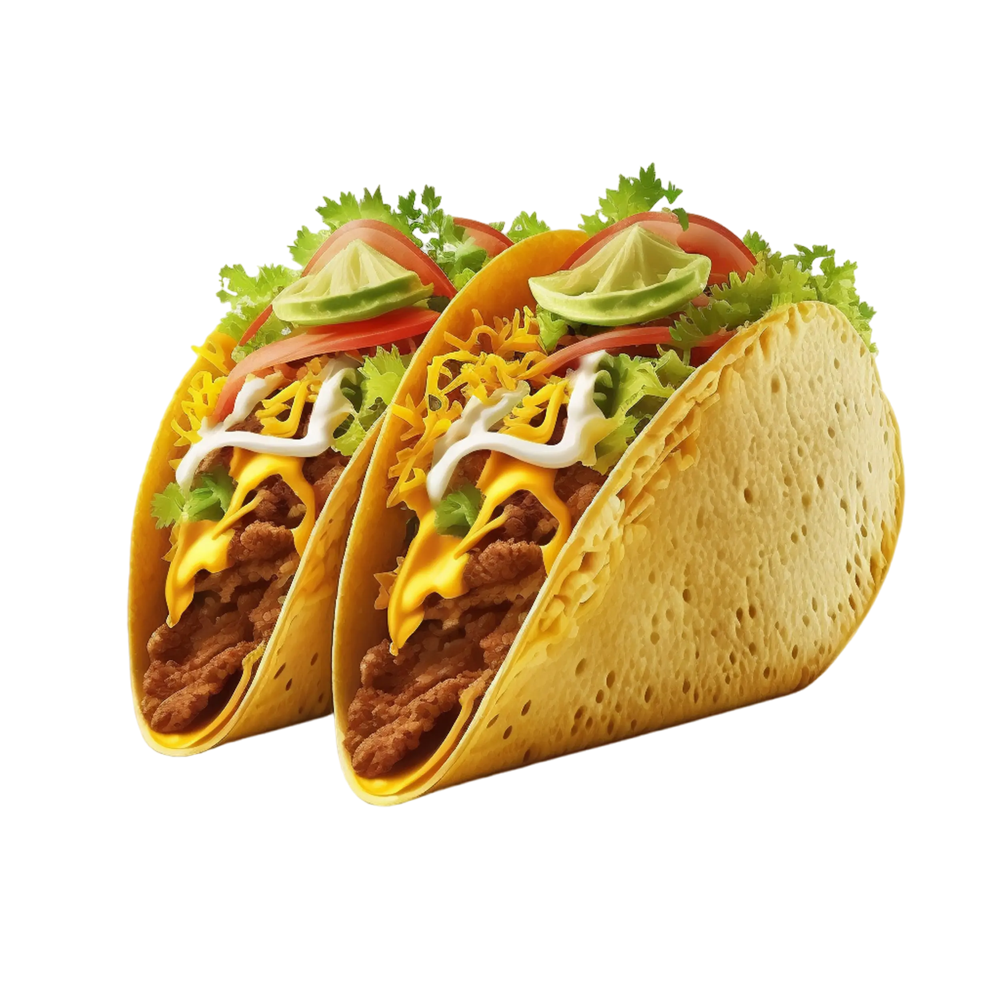

Tacos are a popular Mexican dish made with soft or crispy tortillas filled with meat, vegetables, cheese, and flavorful sauces.
They offer a delicious mix of textures and flavors, making them perfect for a quick lunch or a satisfying snack.